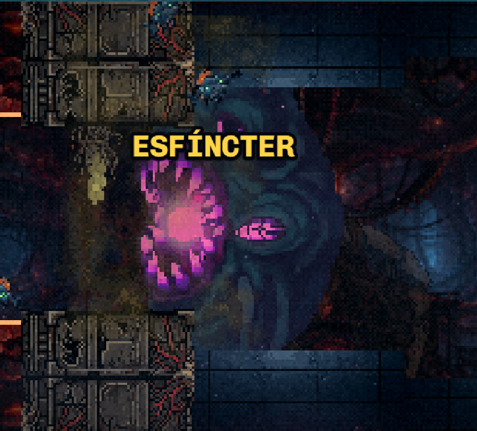
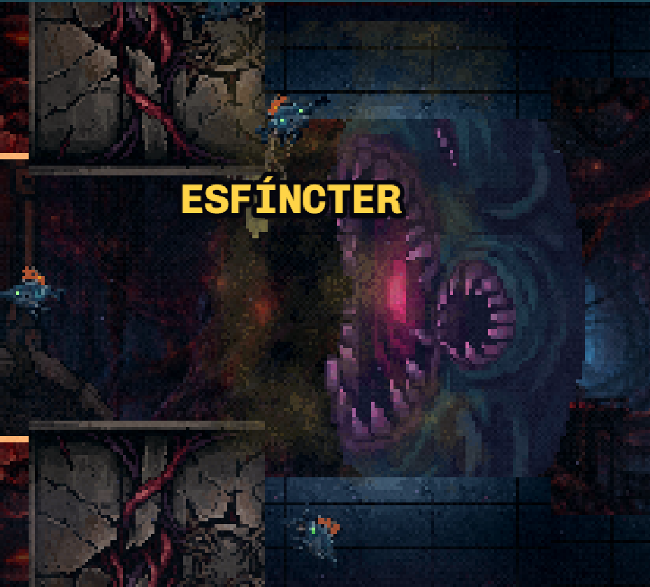
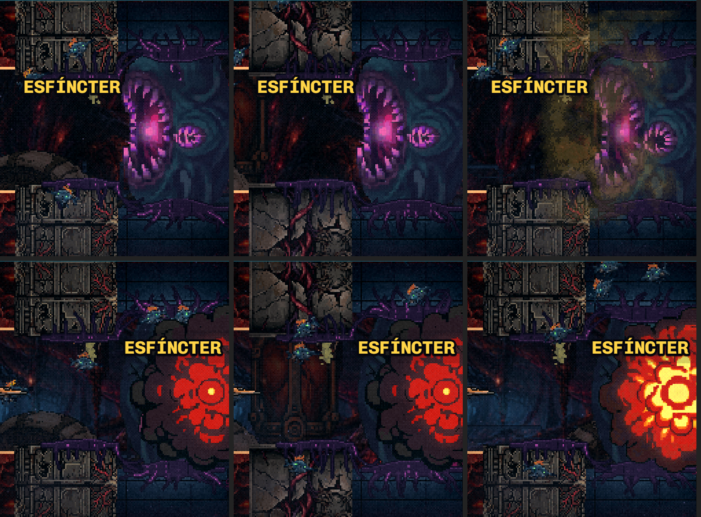
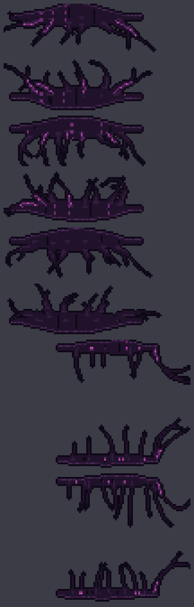
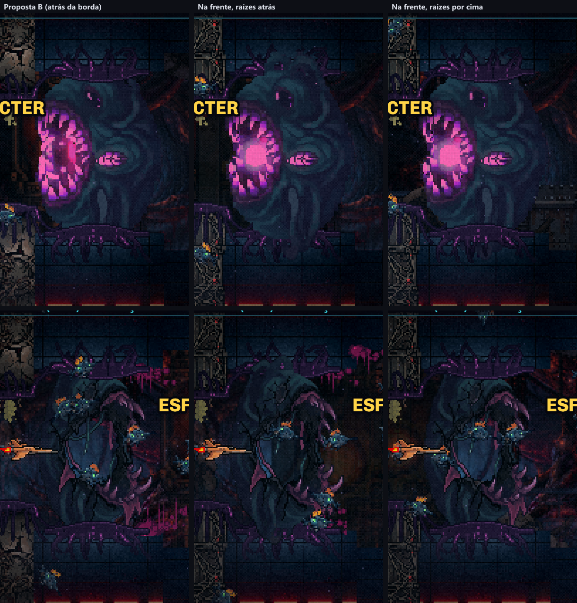
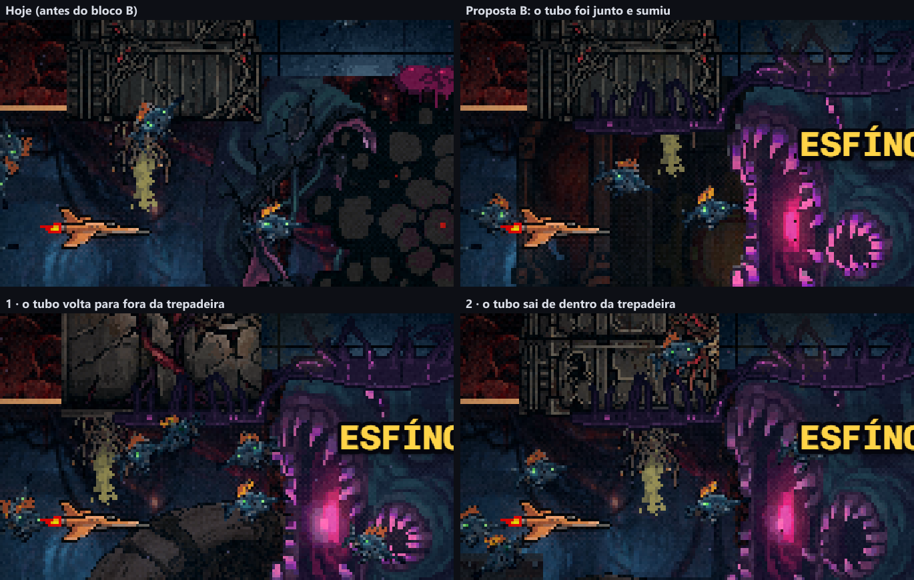
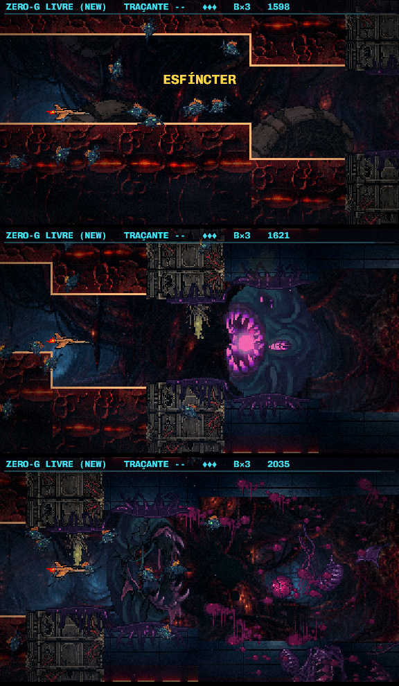

Polimento · Bloco B — o esfíncter preso no tecido
15/10/2026. Nada disto está no código ainda. As fotos e o GIF são do jogo de verdade, com as peças novas e o deslocamento aplicados em memória durante a gravação. O item 4 (o fim do duto) entra aqui, como combinado.
1 · Por que ele aparece atrás do pilar
MEDIDOEle nasce em cima do pilar e mora atrás dele
- Onde ele está
- O esfíncter nasce 56px à direita do centro do pilar da junta. O pilar tem 37,6px de meia largura, então os dois se sobrepõem em uns 27px.
- Por que atrás
- Ele mora atrás da borda, de propósito: é assim que as pontas de cima e de baixo dele somem dentro da parede, igual à porta que você aprovou em 20/09. Mas o pilar fica na frente da borda, e com isso corta o corpo dele com uma linha reta.
- Onde corta
- O pilar passa 18px da parede da câmara D para dentro do corredor. É nessa faixa, dentro do corredor, que o corpo dele aparece cortado.


2 · A proposta
PARA APROVARDepois do pilar, com raízes, e o pilar coberto pelo mesmo tecido
- Ele nasce 24px mais tarde: a 80px do centro do pilar, não a 56. Medi a largura dele, quadro a quadro, nas linhas onde o pilar invade o corredor. A +80 sobram 2px de folga. A borda direita dele cai em +125,5, ainda dentro da primeira placa da câmara D, que é plana. Ele continua tapando o corredor inteiro: tem 171px de altura num vão de 114.
- Raízes no teto e no chão: um lábio de carne cobre a linha onde o corpo some na parede, e as raízes abrem em leque, cavando a borda. A ideia é a do pé do Tubo, em tamanho maior.
- Uma trepadeira na ponta do pilar, que é o item 4: o mesmo tecido cresce sobre a ponta do pilar, escorre pela face dele e desce para encontrar as raízes do esfíncter. O pilar deixa de ser pedra sozinha. Pilar e esfíncter viram uma soleira só.
- A cor
- A 1ª versão usou o azul-petróleo do corpo dele, e sumiu: é exatamente a cor dos ladrilhos da borda D. A borda clara do lábio ainda lia como uma prateleira. Por isso as raízes ficaram no violeta-escuro da sombra dele, com veias no magenta da boca. É a mesma leitura das rachaduras vermelhas do pilar: linha escura com brilho dentro.
- No estouro
- As raízes e a trepadeira ficam. Viram os tocos do que foi arrancado. A explosão, o gás e as mangueiras não mudam.
- A parede abrindo
- Em t=114,5 a parede recua. As raízes vão seguir a superfície quadro a quadro, como tudo que se prende à borda.

3 · As variantes
ESCOLHERRaízes A, B ou C, e trepadeira A ou B
- A: poucas raízes grossas, com veias.
- B: mais raízes, mais finas, com veias e galhos. É a minha recomendação: é a que mais lê como “cresceu ali”.
- C: a forma da A sem as veias, só o corpo escuro. É a mais discreta.


scripts/_polimento/_raizes-esfincter.mjs), no tamanho real do jogo.4 · O esfíncter na frente da borda
PARA APROVARVocê escolheu a B e perguntou: por que não na frente?
- Por que ele estava atrás
- Por herança. A regra foi feita para a porta (20/09), que tinha de parecer encaixada na abertura, e o esfíncter nasce pelo mesmo caminho do código. Mas ele é uma criatura inteira: a cúpula e as gavinhas de cima e de baixo foram desenhadas para aparecer, e passam 28px para dentro da parede de cada lado.
- As camadas
- De trás para a frente: borda, raízes, esfíncter, pilar, trepadeira. O corpo cheio dele termina bem na linha da parede. Então as raízes continuam presas ali, só que atrás do corpo, e o que aparece delas é o leque entrando na parede, dos dois lados da cúpula.
- O que não muda
- A mangueira continua cravada atrás da borda, como você pediu. O gás passa por cima de tudo. A colisão fica igual, porque só a camada muda.


O seu veredito: na frente fica estranho, porque as raízes dão a base, mas as pontas dele passam por cima delas. Ele volta para trás da borda, como na proposta B.
5 · O tubo de gás que sumiu
ESCOLHERO tubo anda preso ao esfíncter, e foi junto com ele
- A causa
- O tubo fica sempre 62px antes do esfíncter. Quando empurrei o esfíncter 24px para a direita, o tubo foi junto e parou embaixo da ponta do pilar, bem onde agora pende a trepadeira. As mangueiras escuras ficaram cobertas, e só a pluma de gás aparecia.
- 1 · Fora da trepadeira
- O tubo volta para perto de onde estava, 40px mais longe do esfíncter. Continua cravado atrás da borda, como você pediu em 22/09, e as mangueiras penduram à mostra à esquerda da trepadeira. É a minha recomendação: o tubo fica igual ao que você já aprovou.
- 2 · Dentro da trepadeira
- O tubo sai de dentro do tecido que cobre o pilar, como se a trepadeira alimentasse ele. Para isso ele tem de passar para a frente do pilar, por baixo da trepadeira.
- O gás
- A nuvem e a área que o tiro precisa atravessar continuam onde estavam em relação ao esfíncter.
A sua escolha: o tubo saindo de dentro da trepadeira (opção 2).

6 · No código
PARA APROVARRaízes B, trepadeira B, tubo saindo dela, esfíncter atrás da borda
- O esfíncter
- Nasce a 80px do centro do pilar, medido a partir do pilar e não mais da borda da tela. Continua atrás da borda. As raízes andam com ele e releem a parede a cada quadro.
- A trepadeira
- Ela pertence ao pilar, e por isso entra na tela junto com o pilar, uns 0,7s antes de o esfíncter aparecer, em vez de brotar de repente. Só o pilar da soleira tem trepadeira; os pilares das outras câmaras ficam como estão.
- O tubo
- Pende da ponta do pilar, na frente da pedra e atrás do tecido. A nuvem de gás e a área do tiro ficaram onde estavam.
- Conferido
- A sonda do esfíncter passou inteira, com 5 conferências novas: o pilar está na tela, está vestido, as raízes estão plantadas, ela nasce a 80px dele e o tubo sai enterrado na ponta dele. As outras duas sondas da F4 têm os mesmos defeitos que já tinham antes desta mudança (conferi no código antigo).
